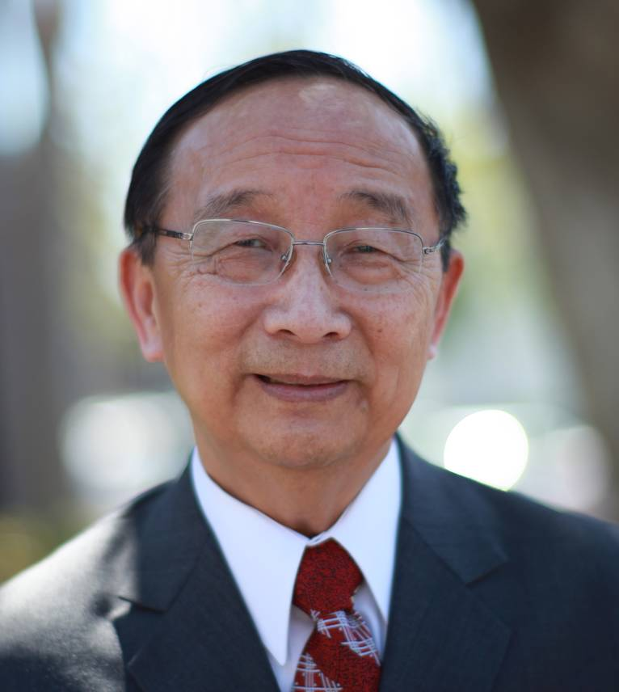

《不一樣的生命──基督徒的全人成長》主題講員：劉富理牧師
生於傳道人的家庭，大學四年級時經歷罪得赦免的喜樂，清楚神的呼召，奉獻作福音工人。先後畢業於中原理工學院土木系工學士（B. E.）台南神學院道學碩士（B. Div.）、亞洲理工學院結構力學碩士（M. E.）、富樂神學院神學碩士（Th. M）、宣教學博士（ D. Miss.）、文化間哲學博士（ Ph. D.）
曾任中原大學助理校牧、講師、東海大學校牧、工學院副教授，牧養洛杉磯台福基督教會25年、正道福音神學院院長25年。2014年七月為正道福音神學院榮譽院長。
1986年，從主領受『為主圖謀大事，搶救百萬靈魂』的負擔，帶領台福基督教會同工在北美及海外推動植堂宣教事工。服事中注重靈命更新，門徒造就，個人談道及全人醫治。
劉牧師師母於1973結婚，育有四個女兒，現有十個孫兒女。